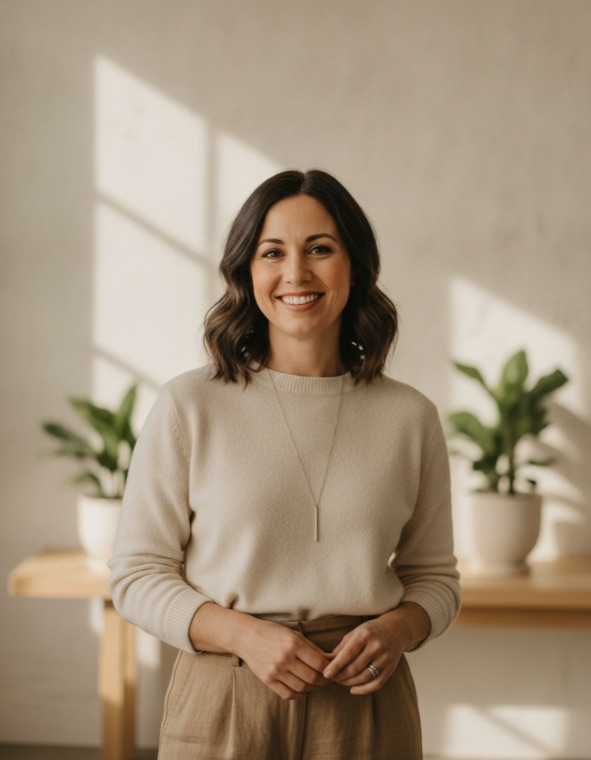
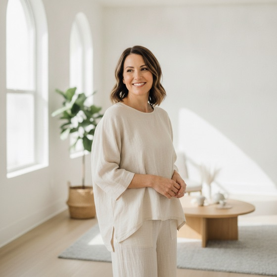

Дойти можно.
Начни сегодня.
Срываются все — мы поможем вернуться и дойти. Бери и делай. Сорвался — снова делай.


Уже с нами 12 400 человек · Войти
С чего наведём порядок
Выбери, что качаем первым. Одно направление — один фокус. Остальное подключим позже.
Твой минимум на каждый день
Отметь привычки, которые реально потянешь. Лучше мало и стабильно, чем много и в ноль.
Минимум невозможно провалить. Сделал по чуть-чуть каждый день — и через месяц ты другой человек. Планку поднимем, когда привыкнешь побеждать.
Идёшь сам или
с наставником
Сам — твой темп, твои правила. С наставником — рядом человек, который прошёл этот путь и подстрахует на срыве. Оба варианта рабочие.
свои правила
С наставником
до результата
«Я не верю в силу воли по щелчку. Верю в систему и в то, что после срыва ты снова встаёшь. Покажу как.»
Передумаешь — переключишься в любой момент. Это не клетка.
Сегодня
«Не обязательно быть лучшим. Обязательно — сделать сегодня то, что обещал себе.»
С добрым утром. Сегодня просто закрой свой минимум — этого достаточно. Я рядом 💪


Как ты сегодня?
Честно — это видит только твой наставник.
Твой путь
Срыв не обнуляет тебя. Он обнуляет один день. Серию начнём заново прямо сейчас — без вины. Встал, отряхнулся, пошёл дальше.
Среда
Чат тех, кто тоже доходит. Здесь не ноют — поддерживают, делятся победами и тянут друг друга вперёд.
Сергей
Медали за серии, уровни, выполненные вызовы. Всё на видном месте — открой любую и поделись.


Наши герои
Реальные люди и реальные результаты: было так — стало так. Большие победы и маленькие шаги — всё считается. Листай и заряжайся.
Сделай первый шаг сегодня. Через месяц расскажешь своё «было → стало».
Наставники
Те, кто прошёл путь и готов вести. Посмотри, кто рядом, выбери своего — и пойдём.
Сорваться может каждый — важно вернуться на следующий день. Покажу, как держать форму, когда нет сил.

Здоровье — это не диета на месяц, а ритм, который остаётся. Научу строить день так, чтобы тело сказало спасибо.
Прошёл путь от долгов до стабильного дохода — без волшебных схем, на привычках. Покажу маленькие шаги к деньгам каждый день.
Сила не в мотивации, а в системе. Собирала свою жизнь по кирпичику после выгорания. Помогу превратить намерения в привычки.